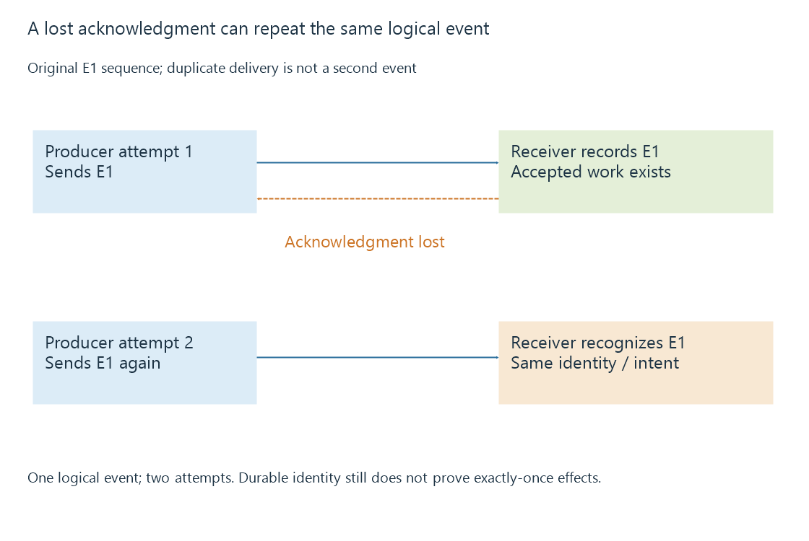

Event delivery, retries and duplicate processing
Event retries recover from uncertain delivery but can duplicate processing, so event identity, durable recording and effect semantics need separate boundaries.
A retry repeats an attempt whose result was unsuccessful or uncertain. For an event, the receiver may already have accepted or processed the first attempt even when the sender did not receive the acknowledgment.
That is why reliable event handling needs more than “try again.” It needs an identity for the logical event and a completion rule for the work it causes.
Delivery can succeed while acknowledgment is lost
An original event E1 reaches a receiver and is recorded. The successful response is lost on the return path. The producer later sends E1 again.
Attempt 1: E1 delivered and recorded
Response: lost before producer observes it
Attempt 2: E1 delivered again
Logical events: one
Delivery attempts: two
Both attempts belong to the same logical event. Treating each delivery as a new event can produce two notifications or two increments.

The producer's timeout only establishes that it did not observe completion in time. It does not prove that the receiver performed no work.
Deduplication needs an identity and a lifetime
CloudEvents defines event identity using source and ID together. Other event systems define their own keys. An integration must use the actual contract rather than assuming every Emby event includes a particular field.
A normalized original example uses (server-A, E1) as its deduplication key. The receiver retains the key after accepted processing. A repeated delivery with that key can then be recognized.
An in-memory set loses its records on restart. A retention period shorter than the producer's possible retry window can also let a later repeat appear new.
| Condition | Remaining duplication question |
|---|---|
| Key only in process memory | What happens after restart? |
| Key expires quickly | Can an old delivery arrive after expiry? |
| IDs unique only within a source | Is source included in the key? |
| Two workers accept simultaneously | Is the claim/record operation coordinated? |
| Same key has different content | How does the contract handle an inconsistent replay? |
The key's identity and the record's durability have to fit the delivery behavior.
A crash window remains around an external effect
Suppose a receiver sends a phone alert, then records “E1 done.” If it crashes between those actions, a retry can send the alert again.
Reverse the order—record “done,” then send—and a crash between them can suppress the alert entirely. Merely choosing one order does not provide exactly-once external effects.
A transactional intent or outbox design records the event and intended work under one durable database boundary. A worker then attempts the effect. The downstream service may support an idempotency key so repeating the same intent does not create another effect.
If the downstream service has no such contract, uncertainty can remain between applying the effect and recording its result. The receiver should describe that limit rather than claiming a deduplication table automatically solves every failure.
The isolated example verifier checks deduplicated durable intent records on toy data and evaluates the distinct external-effect window. It does not send notifications or operate a home system.
Arrival order need not be state order
An older event can be delayed while a newer event arrives promptly. Different workers can also finish in another order.
If an operation applies an absolute desired state, a supported per-entity version can help reject older observations. If the event source supplies no ordering/version guarantee, the integration may need a fresh state query or another reconciliation rule.
Deduplicating E1 does not order E1 relative to E2. Identity and ordering solve different problems.
Backoff changes load, not completion semantics
An original retry policy waits one, two and four seconds between failed attempts, before accounting for operation duration. Its accumulated waiting time is seven seconds.
Jitter can spread concurrent clients' attempts so they do not all retry at the same instant. Retry-After, when supplied and applicable, contributes the source's requested timing.
Neither delay nor jitter makes an unsafe repeated action idempotent. The operation's effect semantics still govern whether repeating it is appropriate.
For Emby webhooks or external integrations, retain the event identity, attempt result and accepted-processing boundary. Recovery can then reconcile uncertain work rather than interpreting every successful HTTP response as proof of a completed downstream effect.
See Also
- Webhooks and pushed event notifications
- WebSockets and a continuing message connection
- Playback events and dependable home automation